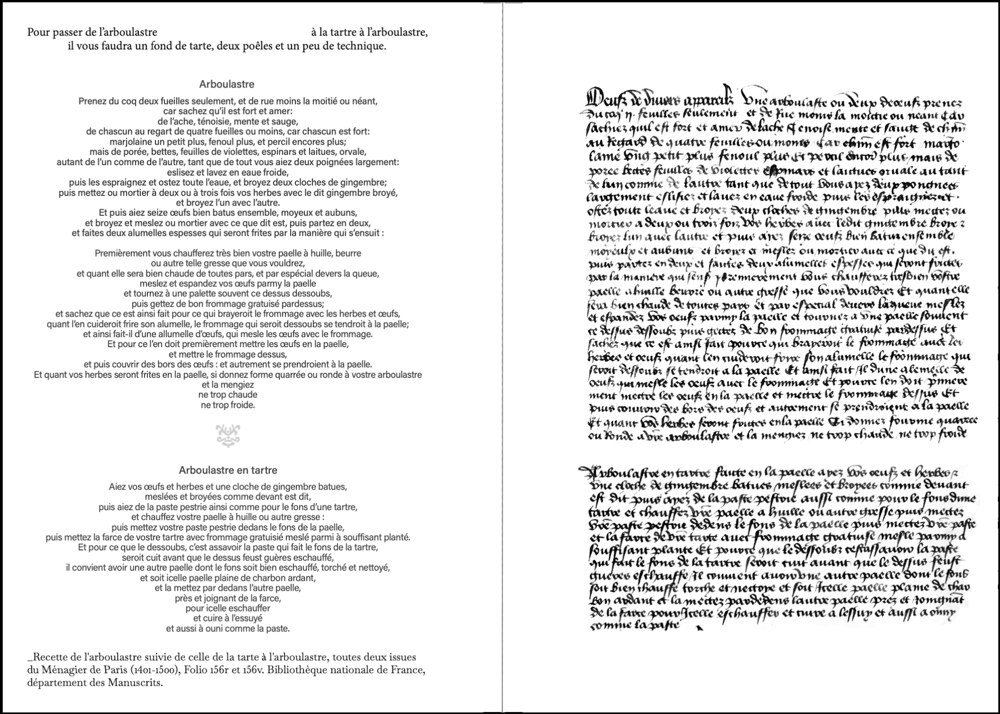
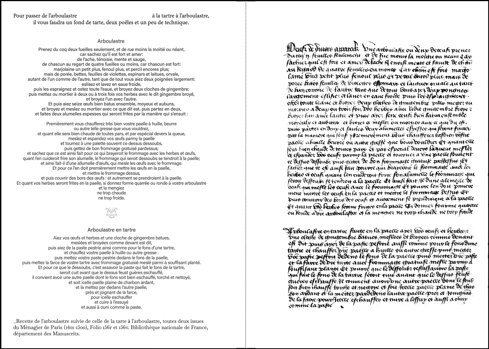
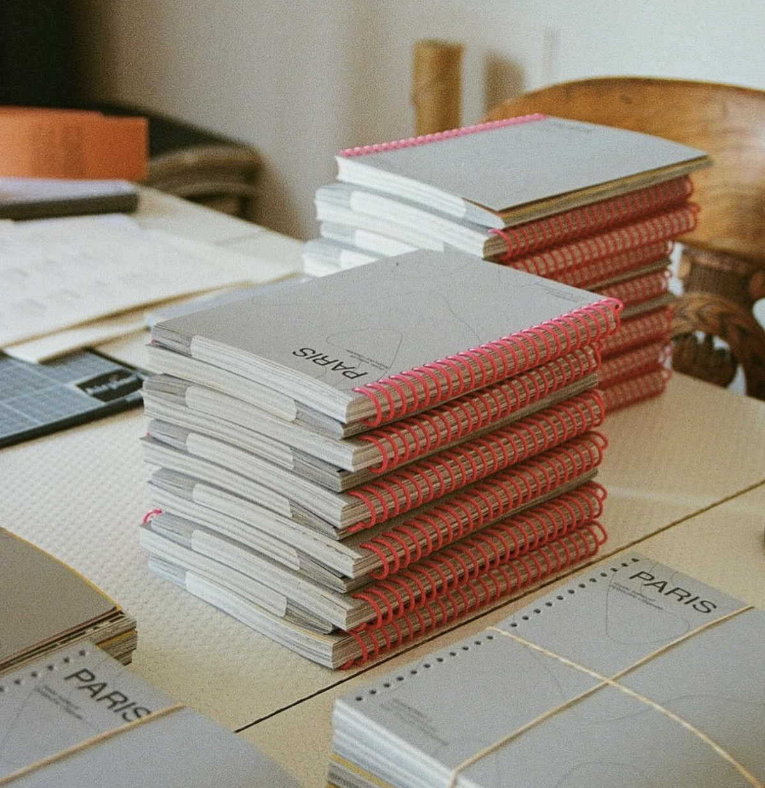

-

 

-


-


-


-


TARTANALYSE
Recherches menées par Alix Laraignou et Adèle Morineau
Avec les contributions de Gaé, Lison Zzzero, Marie Andrieu et Pauline Thirion
Conception éditoriale et graphique : Alix Laraignou
Date de publication : mars 2025
Pages : 70
Dimensions : 210mm x 140mm
La tarte se partage, se coupe en parts, se distribue, se rompt – tout comme le pain dont elle dérive. Ce mets familier de la cuisine française (mais pas que), sut autant faire sa place parmi les soupers populaires que sur les tables royales. Elle apparaît dans de nombreux contes, expressions langagières, légendes culinaires et ritournelles, et devient également un élément central de la comédie burlesque.
À travers ces pages, nous avons donc cherché à sonder la tarte – en nous intéressant à ses origines, en tentant d’inventorier la diversité de ses recettes et la multiplicité de ses formes, et en retraçant son évolution à travers les âges et nos imaginaires. Elle se donnera donc à voir d’abord sous son sens propre, mais aussi sous son sens figuré, car la tarte n’est pas uniquement faite pour être mangée. La tarte, elle se regarde, elle symbolise, elle évoque, voire personnifie. On l’utilise pour faire autant illusion qu’allusion – que cela soit au secret, à la fuite du temps, ou aux apparences trompeuses.
Enfin, la tarte se retrouve aussi au milieu de nombreux débats. Culinaires d’abord, à cause de ses recettes variant entre les localités, pouvant déclencher parfois de vives querelles de chapelle, puis politiques, quand la tarte n’est plus dégustée mais lancée au visage, plus tellement pour faire rire, mais surtout en signe de contestation. En mêlant dans cette recherche, pop culture, savoirs vernaculaires et (une pincée de) culture savante, nous vous concoctons ici une approche contrastée et décloisonnée de la tarte, de son histoire et de sa symbolique. Ces différents modes de savoir sont ici considérés sur un pied d'égalité pour tenter de les faire dialoguer – voir comme ils se répondent et se nourrissent - et peut-être faire advenir d’autres savoirs inattendus.
SOLD OUT
CERTAINES MÉDUSES SONT IMMORTELLES
Autrices : Anouck Chênebeau, Louise Cattarinussi, Isaline Dupond Jacquemar, Alix Laraignou, Marine Lemaire, Maud Yvon
Date de publication : mai 2023
Pages : 62
Dimensions : 210mm x 145mm
Méduse, celle qui protège, petite-fille de la Terre
et du flot marain.
Chevelure de serpents.
Pouvoir de pétrifier quiconque croise son regard.
Allure fatalement magnifique,
devenue monstrueusement hideuse.
La figure mythologique de la méduse
effrais, attire, inspire.
En 2022, base bleue imaginait l’exposition « Certaines méduses sont immortelles ».
Ce projet a initié de vives discussions, de douces rêveries et des méditations spéculatives en tout genre.
Un an plus tard, cette recherche s'est poursuivie dans une édition.
Mêlant l’écrit et l’image, cet ouvrage collectif donne à voir des facettes de nos existences incarnées nous constituant à différents âges.
Il sonde le regard porté sur les corps et explore l’être en train de se faire et de se défaire.
SOLD OUT
HUMEDADES
Autrices : l'artiste Ángela Jiménez Durán et la curatrice Margaux Knight
Conception éditoriale et graphique : Vincent Chappuis
Date de publication : décembre 2023
Pages : 60
Dimensions : 194mm x 240mm
Les installations d’Ángela sont des indices poétiques d’une cartographie énigmatique,
elles dessinent les contours d’un univers habité qui questionne radicalement la place de l’artiste face aux œuvres, des humains face aux choses, du vivant face aux matières.
Cet objet-livre rassemble les réflexions autour de ces œuvres et de leur réception, tout en mêlant pratiques artistiques et universitaires.
Il vise à faire advenir un mode de connaissance qui fasse dialoguer poésie et recherche critique.
Cet ouvrage a été publié dans le cadre de l’exposition Humedades au Château de Servières (Marseille).
SOLD OUT
QUADERNO 1 - KØBENHAVN
Autrice : Louise Cattarinussi
Date de publication : 2022
Pages : xx
Dimensions : xxmm x xxxmm
QUADERNO est une collection de guides de voyage auto-édités, entre carnets d’adresses et livres de photographie. Sa première édition vous emmène pour une déambulation au fil des quartiers de la capitale danoise !
SOLD OUT
Surtout des fleurs et des visages
Autrice : DASHAETDASHA
Conception éditoriale et graphique : Alix Laraignou
Date de publication : 2022
Pages : 20
Dimensions : xxmm x xxxmm
A travers des formes fixes et colorées répétées jour après jour dans ses carnets, DASHAETDASHA laisse avec curiosité se déployer l'inconnu et devient alors l’observatrice de son propre geste.
Sans quête d’évolution formelle ou de perfectibilité, cette pratique ritualisée se transforme en un champ d’exploration pour une meilleure connaissance de soi et du monde.
A l’occasion de l’exposition *·sᴜʀᴛᴏᴜᴛ ᴅᴇs ғʟᴇᴜʀs ᴇᴛ ᴅᴇs ᴠɪsᴀɢᴇs·' ՞, base bleue a édité un livret réunissant une sélection d'une quinzaine de dessins exposés.
SOLD OUT